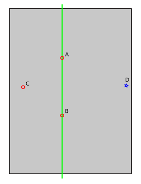

Manuelle Nivellierung¶
Dieses Dokument beschreibt Werkzeuge zum Kalibrieren eines Z-Anschlags und zum Einstellen von Bettnivellierschrauben.
Kalibrieren eines Z-Endstop's¶
Eine genaue Positionierung des Z-Endstops ist entscheidend, um hochwertige Drucke zu erzielen.
Beachten Sie jedoch, dass die Genauigkeit des Z-Endstop-Schalters selbst ein limitierender Faktor sein kann. Verwenden Sie Trinamic-Schrittmotortreiber, sollten Sie erwägen, die Endstop-Phasen-Erkennung zu aktivieren, um die Genauigkeit des Schalters zu verbessern.
Um eine Z-Endstop-Kalibrierung durchzuführen, homen Sie den Drucker, fahren Sie den Kopf auf eine Z-Position mindestens fünf Millimeter über dem Bett (sofern noch nicht geschehen), fahren Sie den Kopf auf eine XY-Position nahe der Bettmitte, wechseln Sie dann zum OctoPrint-Terminal-Tab und führen Sie aus:
Z_ENDSTOP_CALIBRATE
Folgen Sie anschließend den unter "dem Papiertest" beschriebenen Schritten, um den tatsächlichen Abstand zwischen Düse und Bett an der jeweiligen Stelle zu bestimmen. Sind diese Schritte abgeschlossen, kann die Position mit ACCEPT bestätigt und die Ergebnisse mit folgendem Befehl in der Konfigurationsdatei gespeichert werden:
SAVE_CONFIG
Es ist vorzuziehen, einen Z-Endstop-Schalter am der Bett gegenüberliegenden Ende der Z-Achse zu verwenden. (Vom Bett weg zu homen ist robuster, da es dann in der Regel immer sicher ist, Z zu homen.) Muss man jedoch in Richtung Bett homen, wird empfohlen, den Endstop so einzustellen, dass er in einem geringen Abstand (z. B. 0,5 mm) über dem Bett auslöst. Fast alle Endstop-Schalter können gefahrlos noch ein kleines Stück über ihren Auslösepunkt hinaus eingedrückt werden. Ist dies der Fall, sollte der Befehl Z_ENDSTOP_CALIBRATE für die Z-position_endstop einen kleinen positiven Wert (z. B. 0,5 mm) melden. Das Auslösen des Endstops, während er noch etwas Abstand zum Bett hat, verringert das Risiko einer versehentlichen Bett-Kollision.
Manche Drucker ermöglichen es, die Position des physischen Endstop-Schalters manuell anzupassen. Es wird jedoch empfohlen, die Z-Endstop-Positionierung softwareseitig mit Klipper durchzuführen - sobald sich der physische Endstop an einer geeigneten Stelle befindet, können weitere Anpassungen durch Ausführen von Z_ENDSTOP_CALIBRATE oder manuelles Aktualisieren des Werts Z position_endstop in der Konfigurationsdatei vorgenommen werden.
Nivellierschrauben des Druckbettes einstellen¶
Das Geheimnis einer guten Bettnivellierung mit Nivellierschrauben besteht darin, das hochpräzise Bewegungssystem des Druckers während des Nivellierungsvorgangs selbst zu nutzen. Dazu wird die Düse an eine Position nahe jeder Bettschraube gefahren und diese Schraube dann angepasst, bis das Bett einen festgelegten Abstand zur Düse hat. Klipper verfügt über ein Werkzeug, das dabei unterstützt. Um dieses Werkzeug zu verwenden, müssen die XY-Position jeder Schraube angegeben werden.
Dies geschieht durch Anlegen eines Konfigurationsabschnitts [bed_screws]. Er könnte zum Beispiel etwa so aussehen:
[bed_screws]
screw1: 100, 50
screw2: 100, 150
screw3: 150, 100
Befindet sich eine Bettschraube unter dem Bett, geben Sie die XY-Position direkt über der Schraube an. Liegt die Schraube außerhalb des Betts, geben Sie die XY-Position an, die der Schraube am nächsten liegt, aber noch innerhalb des Bettbereichs ist.
Sobald die Konfigurationsdatei bereit ist, führen Sie RESTART aus, um diese Konfiguration zu laden. Anschließend können Sie das Werkzeug starten, indem Sie ausführen:
BED_SCREWS_ADJUST
Dieses Werkzeug bewegt die Druckerdüse zu jeder Schrauben-XY-Position und fährt die Düse anschließend auf eine Höhe von Z=0. An diesem Punkt kann der "Papiertest" verwendet werden, um die Bettschraube direkt unter der Düse anzupassen. Weitere Informationen finden Sie unter "dem Papiertest"; passen Sie jedoch statt der Düsenhöhe die Bettschraube an. Passen Sie die Bettschraube an, bis beim Hin- und Herbewegen des Papiers eine geringe Reibung spürbar ist.
Sobald die Schraube so angepasst ist, dass eine geringe Reibung spürbar ist, führen Sie entweder den Befehl ACCEPT oder ADJUSTED aus. Verwenden Sie ADJUSTED, wenn die Bettschraube angepasst werden musste (typischerweise mehr als etwa 1/8 Umdrehung der Schraube). Verwenden Sie ACCEPT, wenn keine wesentliche Anpassung notwendig war. Beide Befehle lassen das Werkzeug zur nächsten Schraube fortfahren. (Wird ADJUSTED verwendet, plant das Werkzeug einen zusätzlichen Durchgang zur Anpassung der Bettschrauben ein; das Werkzeug wird erfolgreich abgeschlossen, sobald für alle Bettschrauben bestätigt ist, dass keine wesentliche Anpassung mehr erforderlich ist.) Mit dem Befehl ABORT kann das Werkzeug vorzeitig beendet werden.
Dieses System funktioniert am besten, wenn der Drucker über eine ebene Druckoberfläche (z. B. Glas) und gerade Schienen verfügt. Nach erfolgreichem Abschluss des Bettnivellierungswerkzeugs sollte das Bett druckbereit sein.
Fein abgestufte Einstellung der Druckbettschraube¶
Verwendet der Drucker drei Bettschrauben, die alle unter dem Bett liegen, ist möglicherweise ein zweiter "hochpräziser" Bettnivellierungsschritt möglich. Dazu wird die Düse an Positionen gefahren, an denen sich das Bett bei jeder Schraubenanpassung um eine größere Strecke bewegt.
Betrachten Sie zum Beispiel ein Bett mit Schrauben an den Positionen A, B und C:

Bei jeder Anpassung der Bettschraube an Position C schwingt das Bett entlang eines durch die beiden übrigen Bettschrauben definierten Pendels (hier als grüne Linie dargestellt). In dieser Situation bewegt jede Anpassung der Schraube an C das Bett an Position D stärker als direkt an C. Es ist somit möglich, eine feinere Anpassung der Schraube C vorzunehmen, wenn sich die Düse an Position D befindet.
Um diese Funktion zu aktivieren, würde man die zusätzlichen Düsenkoordinaten bestimmen und sie zur Konfigurationsdatei hinzufügen. Sie könnte zum Beispiel so aussehen:
[bed_screws]
screw1: 100, 50
screw1_fine_adjust: 0, 0
screw2: 100, 150
screw2_fine_adjust: 300, 300
screw3: 150, 100
screw3_fine_adjust: 0, 100
Ist diese Funktion aktiviert, fordert das Werkzeug BED_SCREWS_ADJUST zunächst zu groben Anpassungen direkt über jeder Schraubenposition auf, und sobald diese bestätigt sind, zu feinen Anpassungen an den zusätzlichen Positionen. Verwenden Sie an jeder Position weiterhin ACCEPT und ADJUSTED.
Bettnivellierungsschrauben mit der Bettsonde anpassen¶
Dies ist eine weitere Möglichkeit, die Bettnivellierung mit der Bettsonde zu kalibrieren. Dafür benötigen Sie eine Z-Sonde (BL Touch, induktiver Sensor usw.).
Um diese Funktion zu aktivieren, würde man die Düsenkoordinaten so bestimmen, dass sich die Z-Sonde über den Schrauben befindet, und sie dann zur Konfigurationsdatei hinzufügen. Sie könnte zum Beispiel so aussehen:
[screws_tilt_adjust]
screw1: -5, 30
screw1_name: front left screw
screw2: 155, 30
screw2_name: front right screw
screw3: 155, 190
screw3_name: rear right screw
screw4: -5, 190
screw4_name: rear left screw
horizontal_move_z: 10.
speed: 50.
screw_thread: CW-M3
screw1 dient stets als Referenzpunkt für die anderen, das System geht also davon aus, dass sich screw1 auf der korrekten Höhe befindet. Führen Sie immer zuerst G28 und dann SCREWS_TILT_CALCULATE aus - dies sollte eine Ausgabe ähnlich der folgenden erzeugen:
Send: G28
Recv: ok
Send: SCREWS_TILT_CALCULATE
Recv: // 01:20 means 1 full turn and 20 minutes, CW=clockwise, CCW=counter-clockwise
Recv: // front left screw (base) : x=-5.0, y=30.0, z=2.48750
Recv: // front right screw : x=155.0, y=30.0, z=2.36000 : adjust CW 01:15
Recv: // rear right screw : y=155.0, y=190.0, z=2.71500 : adjust CCW 00:50
Recv: // read left screw : x=-5.0, y=190.0, z=2.47250 : adjust CW 00:02
Recv: ok
Dies bedeutet, dass:
- Die vordere linke Schraube ist der Bezugspunkt, der nicht verändert werden darf.
- die vordere rechte Schraube muss 1 volle Umdrehung und eine Vierteldrehung im Uhrzeigersinn gedreht werden
- die hintere rechte Schraube muss 50 Minuten gegen den Uhrzeigersinn gedreht werden
- die hintere linke Schraube muss 2 Minuten im Uhrzeigersinn gedreht werden
Beachten Sie, dass sich "Minuten" auf "Minuten eines Ziffernblatts" bezieht. So sind zum Beispiel 15 Minuten eine viertel vollständige Umdrehung.
Wiederholen Sie den Vorgang mehrmals, bis Sie ein gut nivelliertes Bett erhalten - üblicherweise, wenn alle Anpassungen unter 6 Minuten liegen.
Verwenden Sie eine seitlich am Hotend montierte Sonde (d. h. mit X- oder Y-Offset), beachten Sie, dass eine Anpassung der Bettneigung jede vorherige, mit geneigtem Bett durchgeführte Sondenkalibrierung ungültig macht. Führen Sie nach dem Anpassen der Bettschrauben unbedingt eine Sondenkalibrierung durch.
Der Parameter MAX_DEVIATION ist nützlich, wenn ein gespeichertes Bed Mesh verwendet wird, um sicherzustellen, dass die Bettnivellierung nicht zu weit von dem Zustand abgewichen ist, in dem das Mesh erstellt wurde. Zum Beispiel kann SCREWS_TILT_CALCULATE MAX_DEVIATION=0.01 zum benutzerdefinierten Start-G-Code des Slicers hinzugefügt werden, bevor das Mesh geladen wird. Der Druck wird abgebrochen, wenn der konfigurierte Grenzwert überschritten wird (in diesem Beispiel 0,01 mm), sodass der Anwender die Möglichkeit hat, die Schrauben anzupassen und den Druck neu zu starten.
Der Parameter DIRECTION ist nützlich, wenn sich Ihre Bettanpassungsschrauben nur in eine Richtung drehen lassen. Sie könnten zum Beispiel Schrauben haben, die in ihrer niedrigsten (oder höchsten) möglichen Position beginnen fest angezogen zu sein und sich nur in eine Richtung drehen lassen, um das Bett anzuheben (oder abzusenken). Lassen sich die Schrauben nur im Uhrzeigersinn drehen, führen Sie SCREWS_TILT_CALCULATE DIRECTION=CW aus. Lassen sie sich nur gegen den Uhrzeigersinn drehen, führen Sie SCREWS_TILT_CALCULATE DIRECTION=CCW aus. Es wird ein geeigneter Referenzpunkt gewählt, sodass das Bett durch Drehen aller Schrauben in die angegebene Richtung nivelliert werden kann.